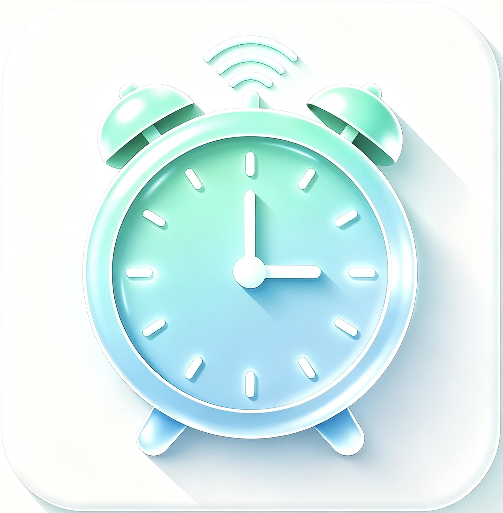

让明早更从容
SmartWake 将闹钟、实时天气和通勤路线放在一起，帮助你根据雨雪、路况和行程变化及时调整提醒。

主要功能
智能闹钟
设置时间、重复日期、铃声、稍后提醒和关闭方式。
天气提前
使用 WeatherKit 获取天气，在雨雪等情况下提前提醒。
路径提前
结合出发地、目的地和通勤路线，辅助调整出发提醒。
常见问题
为什么天气信息没有更新？
请在系统设置中允许 SmartWake 使用定位，并确认设备已连接网络，然后返回 App 刷新天气。
闹钟没有按预期响起怎么办？
请确认闹钟已启用、系统音量合适，并允许 SmartWake 发送通知。建议先使用“试响”检查声音。
如何启用天气或路径提前？
展开目标闹钟，分别进入“天气提前”或“路径提前”，按页面提示完成授权和设置。
如何管理订阅或申请退款？
订阅可在 iPhone 的“设置 → Apple 账户 → 订阅”中管理。退款请求由 Apple 处理，请访问 reportaproblem.apple.com。
如何删除我的数据？
SmartWake 的闹钟设置保存在设备上。删除 App 会移除本地数据；如需其他帮助，请通过下方方式联系我们。